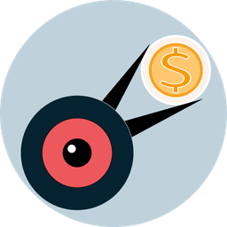

LoonieToonie: Expense Tracker
See where your household's money actually goes.
Scan your receipts, import your bank and card statements, and LoonieToonie shows your spending by category, by store, and month by month. No budgets to set up: it simply shows what you really spend.
One account, two ways in
The Android app and the web app are the same LoonieToonie. Sign in with the same Google account on both and you see the same receipts and transactions, because both use the same spreadsheet in your Google Drive. A receipt scanned on your phone shows up on your computer, and a change made on the web shows up in the app.
Android app
Made for the checkout line. Photograph a receipt with your camera; the text is read on your phone and turned into items and categories.
Web app
Made for a bigger screen. Review and edit your spending, import statement files, and scan a receipt photo, all from any browser on your computer or tablet.
What you can do
- Scan receipts in English, French, and Japanese. Each item gets a category, so one receipt can be split between groceries and household supplies.
- Import bank and card statements (CSV or OFX/QFX files from your bank's website), so purchases without a receipt are counted too. Charges are matched with the receipts you scanned, so nothing is counted twice.
- See patterns. Spending by category and store, and this month compared with your usual month.
- Compare with similar households. Set your household type and province to see your spending next to Statistics Canada's averages for households like yours.
Just ask
Ask about your spending in plain language, in your own language. The numbers come from your own records.
- “What did I spend the most on this month?”
- “How does this month compare with my usual month?”
- “How much did we spend on dining out since January?”
- “Where could I cut back to save $500 a month?”
Your conversations are saved in your spreadsheet too, so you can pick them up on either device.
Your data stays yours
Your receipts and transactions are saved in a spreadsheet and a folder in your own Google Drive. LoonieToonie can only see the files it created there. It has no database of your spending, it shows no ads, and it never sells data. You can open the spreadsheet yourself at any time, and delete your data whenever you like.
Bank sync through Plaid is available on the web app for invited households only, for now. The Android app uses statement import.